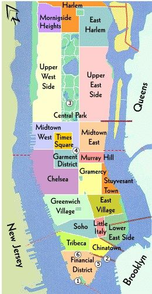
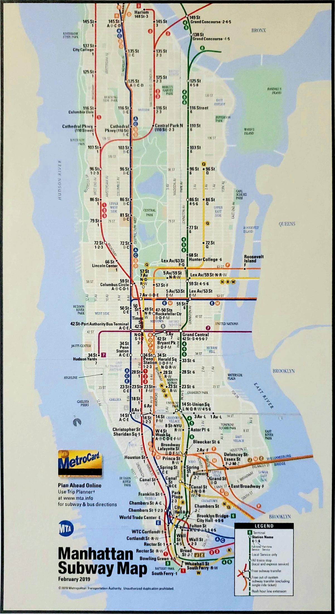

This is a very simplified map of Manhattan. I chose this map because it's easier to view the neighborhoods that divide Manhattan easily, especially to an outsider who might be less familiar. I often travel a lot around various neighborhoods in downtown Manhattan like Chiantown, Soho, Financial District, East Village, and the Lower East Side.

This is a deep dive underground of the Manhattan subway routes. It's interesting to think that right below your feet, there's so many lines and trains running beneath! Subways are a crucial way of getting around NYC, which is why I included them. These routes are extensive, complex, and are a big part of New York's identity. I personally dislike taking the NYC subways, but buses, also a part of the MTA, are one of my bigger ways of travelling.
